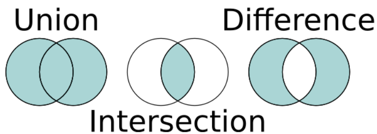

📦 Set - Conjunto
🧠 ¿Qué es un Set?
Un Set es una colección que:
- ❌ No permite elementos duplicados
- ⚡ Está optimizada para búsquedas
- 📦 No tiene índices
- 🔄 Puede o no mantener orden (según implementación)
👉 A diferencia de List, aquí no importa la posición, sino la unicidad
🏗️ Implementaciones principales de Set
| Implementación | Características |
|---|---|
| 🔹 HashSet | 🚀 Muy rápido ❌ No mantiene orden ⭐ El más usado |
| 🔹 TreeSet | 🌳 Mantiene los elementos ordenados 🐢 Más lento |
| 🔹 LinkedHashSet | 📋 Mantiene el orden de inserción ⚡ Rendimiento intermedio |
📌 ¿Qué es un HashSet?
Un HashSet es una implementación de Set que:
- 🚀 Es muy rápida
- 👉 NO garantiza ningún tipo de orden:
- ❌ No respeta el orden en que insertas los elementos
- ❌ No los ordena
- ❌ No es predecible
- 🔥 Usa una tabla hash
Set<String> set = new HashSet<>();
🧠 ¿Cómo se guardan los datos?
👉 No se guardan en orden como en una lista enlazada
👉 Se guardan en una estructura llamada:
📦 Tabla Hash
🧩 ¿Qué es una tabla hash?
💬 Imagina un conjunto de “cajas”, llamados buckets:
[0] → Luis
[1]
[2]
[3] → Ana
[4] → Pedro
Cada elemento se guarda en una posición calculada automáticamente con un código hash.
⚙️ ¿Cómo se decide dónde guardar un elemento?
👉 Se usa el método:
hashCode() --> devuelve un número entero (int) que representa el objeto.
objeto.hashCode() → 12345
12345 % 6 = 3
[3] → Ana
Ese número entero sirve para decidir dónde guardar el objeto en qué bucket de la tabla hash.
Esto es muy eficiente porque ahora para buscar "Ana" no se recorre todo, simplemente se va directamente a la caja 3, 🚀 Búsqueda casi instantánea.
🔄 Flujo real
- 1️⃣ Calcula el hash del objeto
- 2️⃣ Decide en qué “caja” (bucket) guardarlo usando ese código hash
- 3️⃣ Si ya hay algo ahí dentro → usa
equals()
🔍 ¿Qué pasa si dos cosas van a la misma caja (bucket)?
Cuando dos objetos distintos devuelven el mismo código hash, es decir, van a la misma caja, esto se llama 💥 Colisión.
"Ana" → caja 3
"Luis" → caja 3
🧠 ¿Cómo lo soluciona Java?
Java NO sobrescribe NI pierde datos, simplemente guarda varios elementos en el mismo bucket, como si fuera una lista enlazada:
[3] → Ana → Luis
Las colisiones son normales en una tabla hash, pero un exceso de ellas degrada el rendimiento
Un exceso de colisiones significa que tenemos una lista muy grande dentro de un mismo bucket:
[3] → Ana → Luis → Pedro → Marta → Juan → ...
Ahora si queremos hacer esta operación:
set.contains("Marta");
- 1️⃣ Se calcula el hash → va al bucket 3
- 2️⃣ Recorre los elementos de ese cajón
- 3️⃣ Usa
equals()para encontrar el correcto dentro del bucket
Entonces, buscar deja de ser rápido, se vuelve casi como una lista y pierdes la ventaja del HashSet.
🧠 ¿Dónde entra equals() en todo esto?
Hasta tenemos:
- tabla hash
- buckets
- hashCode() para decidir el cajón
Pero hemos visto que varios objetos pueden caer en el mismo cajón... Entonces Java necesita responder a esta pregunta:
“Vale, están en el mismo cajón… pero ¿cómo encuentro ese objeto dentro de ese cajón?”
Aquí entra en juego el método equals().
equals() es un método que heredamos de la clase Object y te dice si dos objetos son iguales o no.
Si NO lo sobrescribimos, por defecto compara si son el mismo objeto en memoria.
Normalmente querremos sobrescribirlo para definir cuándo dos objetos deben considerarse iguales.
En este ejemplo:
Persona p1 = new Persona("Ana");
Persona p2 = new Persona("Ana");
System.out.println(p1.equals(p2)); // false ❌ (ya que no es el mismo objeto en memoria)
//Si sobrescribimos en método equals en la clase Persona:
@Override
public boolean equals(Object o) {
if (this == o) return true;
if (!(o instanceof Persona)) return false;
Persona p = (Persona) o;
return nombre.equals(p.nombre);//decimos que son iguales si tienen el mismo nombre
}
//Entonces ahora si hacemos:
new Persona("Ana").equals(new Persona("Ana")) // true, aunque sean diferentes objetos en memoria, los consideramos el mismo objeto porque tienen el mismo nombre
📦 Formas de crear un Set en Java
En Java, Set es una interfaz, así que no se puede crear directamente con new Set().
Siempre hay que usar una clase que la implemente, como HashSet, LinkedHashSet o TreeSet.
✅ 1. Crear un Set vacío con HashSet
Es la forma más habitual.
Set<String> nombres = new HashSet<>();
//También se puede poner así,
//aunque normalmente preferimos usar el tipo interfaz:
HashSet<String> nombres = new HashSet<>();
🔎 Lo normal en Java es poner Set a la izquierda y la implementación concreta a la derecha.
✅ 2. Crear un Set a partir de una colección
Por ejemplo, a partir de una lista:
List<String> lista = Arrays.asList("Ana", "Luis", "Ana", "Pedro");
Set<String> nombres = new HashSet<>(lista);
🔎 Como un Set no permite duplicados, el valor "Ana" solo aparecerá una vez.
✅ 3. Crear un Set directamente con varios valores
Set<String> frutas = new HashSet<>(Arrays.asList("manzana", "pera", "uva"));
🔎 Muy útil para crear un conjunto con datos iniciales rápidamente.
✅ 4. Crear un Set inmutable con Set.of(...) (Desde Java 9)
Set<String> colores = Set.of("rojo", "verde", "azul");
⚠️ Este conjunto no se puede modificar después.
✅ 5. Crear un Set a partir de otra colección con Set.copyOf(...) (Desde Java 10)
List<String> lista = List.of("A", "B", "C");
Set<String> conjunto = Set.copyOf(lista);
⚠️ También crea un conjunto inmutable.
✅ 6. Crear un EnumSet (solo para enumerados)
enum Dia {
LUNES, MARTES, MIERCOLES
}
Set<Dia> dias = EnumSet.of(Dia.LUNES, Dia.MARTES);
EnumSet<Dia> todos = EnumSet.allOf(Dia.class);
EnumSet<Dia> ninguno = EnumSet.noneOf(Dia.class);
EnumSet<Dia> rango = EnumSet.range(Dia.LUNES, Dia.MIERCOLES);
🔎 EnumSet es una implementación especial y muy eficiente para enums.
🛠️ Métodos más relevantes de Set
➕ boolean add()
Añade un elemento si no existe. Devuelve true si lo ha añadido, false en caso de que el elemento ya exista (que no lo vuelve a añadir porque no admite duplicados).
Set<String> set = new HashSet<>();
set.add("Ana");
set.add("Luis");
set.add("Ana"); // duplicado, de
System.out.println(set);
👉 Resultado:
[Ana, Luis]
Flujo:
- 1️⃣ Calcula el
hashCode(). Para saber a qué bucket ir. - 2️⃣ Va a ese bucket. Mira lo que ya hay dentro.
- 3️⃣ Compara con
equals(). Va revisando los elementos de ese bucket y pregunta si son iguales. Si da true → ya existe, no lo añade. Si da false con todos → sí lo añade
🔍 boolean contains()
Comprueba si existe.
System.out.println(set.contains("Ana")); // true
Flujo:
hashCode()→ va al bucketequals()→ busca el elemento
❌ boolean remove()
Elimina un elemento.
set.remove("Luis");
Flujo:
- hashCode() → localiza el bucket
- equals() → encuentra y elimina
📏 int size()
Número de elementos
System.out.println(set.size());
🧹 clear()
Vacía el set
set.clear();
⚡ Convertir Set en List
Puede convertir los elementos de un Set en una List llamamos al método addAll(), pasando el conjunto como parámetro.
Set<String> set = new HashSet<>();
set.add("123");
set.add("456");
List<String> list = new ArrayList<>();
list.addAll(set);
🔁 Recorrer un HashSet
🔹 for-each
for (String nombre : set) {
System.out.println(nombre);
}
🔹 Iterator
Iterator<String> it = set.iterator();
while (it.hasNext()) {
System.out.println(it.next());
}
🌳 Operaciones de conjuntos con Set
Dado que Set representa un conjunto matemático, podemos aplicar operaciones matemáticas clásicas:
🔗 Unión 🔍 Intersección ➖ Diferencia

Supongamos que tenemos dos conjuntos:
Set<Integer> set1 = new HashSet<>(Arrays.asList(22, 45, 33, 66, 55, 34, 77));
Set<Integer> set2 = new HashSet<>(Arrays.asList(33, 2, 83, 45, 3, 12, 55));
- Unión
addAll(): devuelve la unión de todos los elementos (sin duplicados).Set<Integer> union = new HashSet<>(set1); union.addAll(set2); System.out.println(union);
Resultado:
[2, 3, 12, 22, 33, 34, 45, 55, 66, 77, 83]
- Intersección
retainAll(): devuelve los elementos que están presentes en ambos conjuntos.Set<Integer> interseccion = new HashSet<>(set1); interseccion.retainAll(set2); System.out.println(interseccion);
[33, 45, 55]
- Diferencia
removeAll(): devuelve elementos de set1 que NO están en set2.Set<Integer> diferencia = new HashSet<>(set1); diferencia.removeAll(set2); System.out.println(diferencia);
[22, 66, 34, 77]
IMPORTANTE
Estos métodos MODIFICAN el Set.
set1.addAll(set2); // cambia set1
set1.retainAll(set2); // cambia set1
set1.removeAll(set2); // cambia set1
✅ Por eso hacemos esto:
Set<Integer> copia = new HashSet<>(set1);
👉 Para no perder los datos originales.
⚔️ 3. HashSet vs List
| Característica | List | HashSet |
|---|---|---|
| Duplicados | ✔️ Sí | ❌ No |
| Orden | ✔️ Sí | ❌ No |
| Índices | ✔️ Sí | ❌ No |
| Búsqueda | 🐢 | 🚀 |
✅ Ventajas de HashSet
- 🚀 Búsquedas muy rápidas
- ❌ Evita duplicados automáticamente
- 🧠 Ideal para comprobar existencia
❌ Desventajas
- ❌ No hay orden
- ❌ No puedes acceder por índice
- ⚠️ Depende de
hashCode()yequals()
⚠️🔥 Problema típico con equals() y hashCode()
Set<Persona> personas = new HashSet<>();
Persona p1 = new Persona("Ana");
Persona p2 = new Persona("Ana");
personas.add(p1);
personas.add(p2);
System.out.println("¿p1.equals(p2)? " + p1.equals(p2));
System.out.println("Tamaño del set: " + personas.size());
System.out.println(personas.contains(new Persona("Ana")));
👉 Resultado: 2 ❌
🧠 ¿Por qué ocurre esto?
👉 Java no sabe que son iguales
✅ Solución: sobrescribir equals()
@Override
public boolean equals(Object o) {
if (this == o) return true;
if (!(o instanceof Persona)) return false;
Persona p = (Persona) o;
return nombre.equals(p.nombre);
}
❌ Aún puede fallar...
👉 Si no sobrescribes hashCode()
🎯 Regla de oro
✨ Si sobrescribes
equals(), DEBES sobrescribirhashCode()
✅ Implementación completa
class Persona {
String nombre;
public Persona(String nombre) {
this.nombre = nombre;
}
@Override
public boolean equals(Object o) {
if (this == o) return true;
if (!(o instanceof Persona)) return false;
Persona p = (Persona) o;
return nombre.equals(p.nombre);
}
@Override
public int hashCode() {
return nombre.hashCode();
}
}
🚨 Errores típicos
- ❌ Pensar que Set usa solo
equals() - ❌ No implementar
hashCode() - ❌ Intentar usar índices
- ❌ Suponer que mantiene orden
🧩 Resumen final
- 📦
Set→ sin duplicados - 🚀
HashSet→ rápido y sin orden - 🧠 Usa
hashCode()+equals() - ⚠️ Ambos métodos son obligatorios juntos